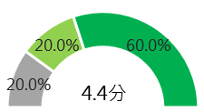
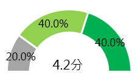
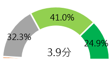
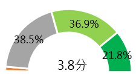
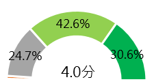
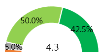
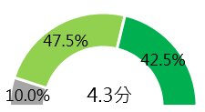
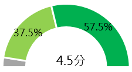
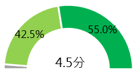

財團法人台灣網路資訊中心
2019年利害關係人調查報告
組織表現總覽
-
保有多元並完善的溝通管道，與各界保持良好暢通的互動。
無論從問卷調查和訪談結果中，滿意度表現佳的原因不乏有感受到與TWNIC良好的互動交流，或者是從合作中體現好的合作夥伴(Good partner)或密集的合作關係(Closer relationships)等評價。 -
務實並有組織性的領導能力貫徹，引領精益求精的組織文化
來自國際組織利害關係人肯定了TWNIC展現定位明確且穩健進步的領導風格，對外積極爭取國際網路資源與國際合作機會，對內超脫組織發展定位並以任務導向形式，協助並支援政府相關業務單位辦理推動各項事務。 -
指標性的技術能力、支援能力
TWNIC扎實的技術基礎與深厚的支援經驗，在原有的業務管理上持續提供優質服務，今年新加入TWCERT/CC業務後更擴大能力範圍到網路資訊安全議題和相關事務協處，提供各界利害關係人更完整的服務和夥伴關係。
各利害關係人之滿意度
域名受理註冊機構
服務品質
技術支援
我對TWNIC是信賴的

TWNIC提供的服務對我的業務是有價值的

n=5
域名註冊人
服務品質
技術支援
我對TWNIC是信賴的
TWNIC提供的服務對我的業務是有價值的

n=1774
IP服務
服務品質
技術支援
我對TWNIC是信賴的
TWNIC提供的服務對我的業務是有價值的

n=40
A1.整體來說，您對TWNIC以下項目的滿意程度是？（單選）
A2.從您過去與TWNIC互動的經驗中，請選擇符合敘述的項目。（單選）
圖 2 滿意度評估與價值感受
TWCERT/CC電子報訂戶
服務品質

技術支援

我對TWNIC是信賴的

TWNIC提供的服務
對我的業務是有價值的

n=501
台灣CERT/CSIRT聯盟成員
我對TWNIC是信賴的

TWNIC提供的服務
對我的業務是有價值的

n=8
A1.整體來說，您對TWCERT/CC以下項目的滿意程度是？
A2.從您過去與TWCERT/CC互動的經驗中，請選擇符合敘述的項目。（單選）
圖 10 滿意度評估與價值感受
未來機會點
合作
加強相關社群之間的互動、提升族群之間的黏度，也能強化TWNIC在網路生態系統中的角色與話語權技術
技術合作或技術輸出是最直接也最快能與國際利害關係人持續合作的模式品牌
強化各項優勢、價值、差異化讓相關關係利害人能主動想與TWNIC合作整體規劃資安藍圖
台灣資安藍圖規畫與組織腳色、及擬定國際利害關係人與優先要突破的目標設定短中長期目標
於國內建立對各利害關係人的競爭優勢與獨特性，國際上對國際夥伴的價值與定位建議
建立品牌增知名度，維繫互動鞏固信賴
- 目前的信任度評價良好，然環境愈趨複雜，信賴需要持續培養維護
- 信賴包含知曉度的提升、信任感的建立鞏固
提升產業資安素養，確立組織服務特點
- 提升產業與資安素養：投資產業、大眾教育，提升網路相關知識與危機意識
- 藉此讓TWNIC的服務重點成為大家都知道、都想要的重點
了解產業供需夥伴，創造合作多贏關係
- 了解產業需求，建立雙贏、多贏的合作關係
- 主動找出跟我們有共同挑戰、問題的合作夥伴，優先與有長期合作意願的合作對象建立關係
建構案例深入分析，活化產業溝通管道
- 產業資訊和資安情報對於相關產業的存在必要性，透過持續提供產業資訊，暢通台灣市場溝通管道